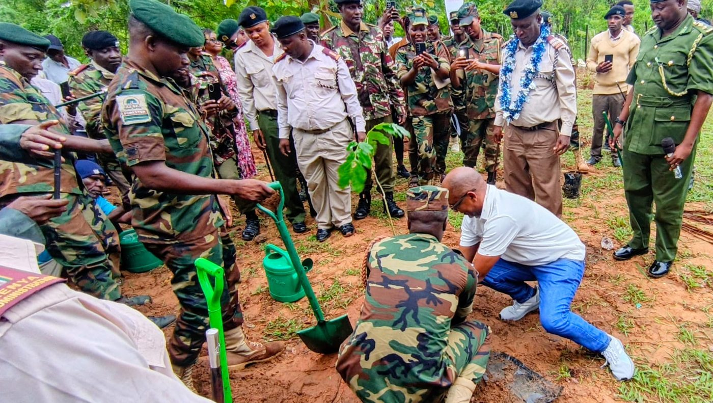
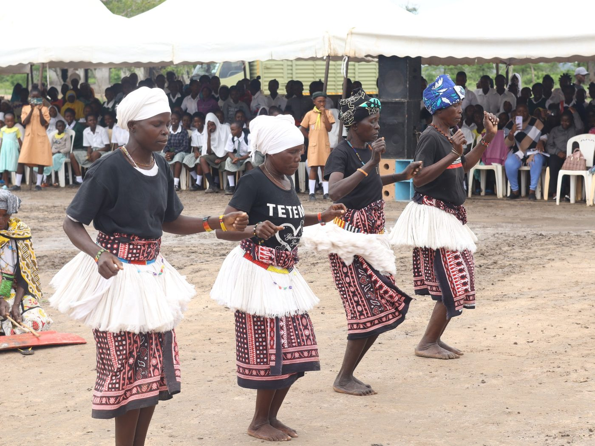
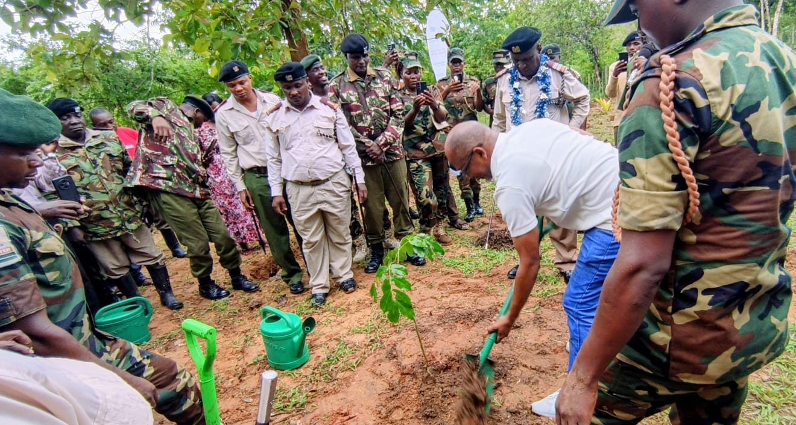
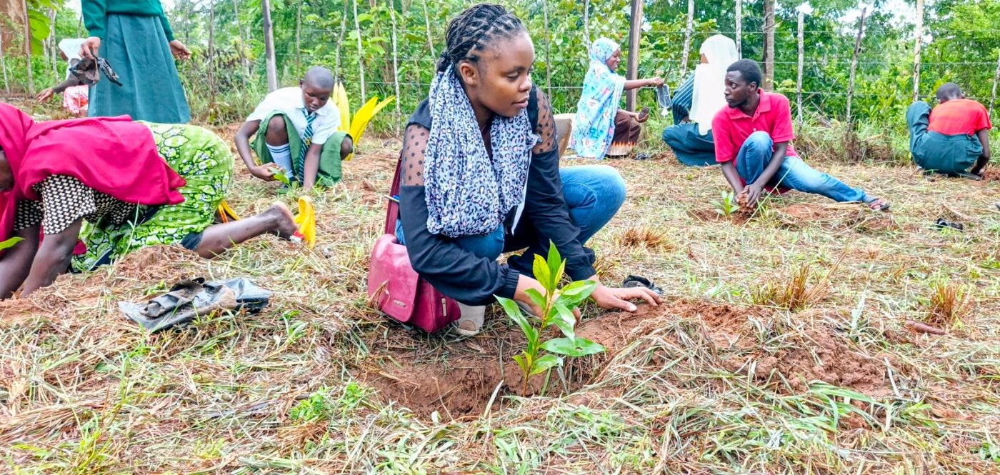
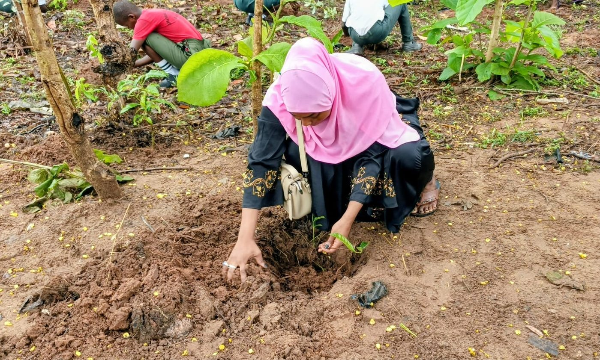
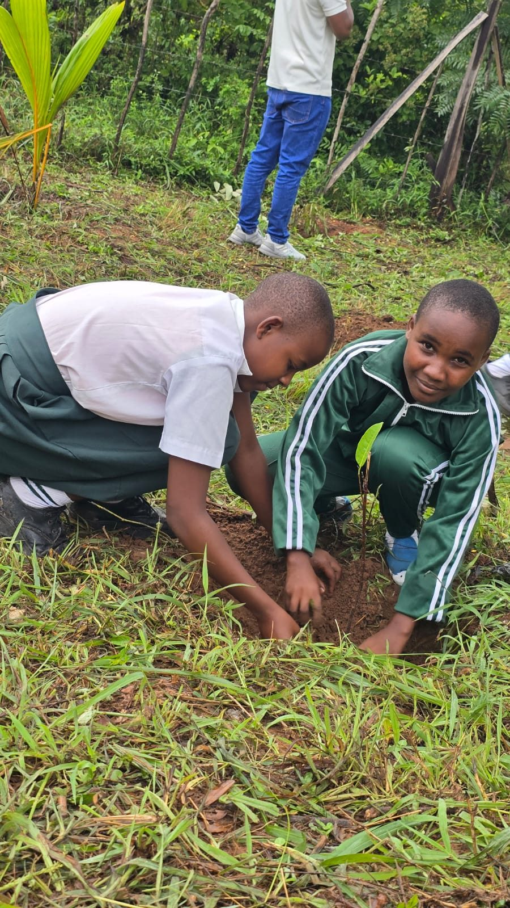
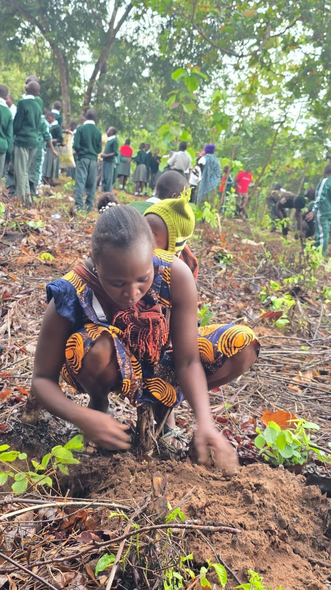
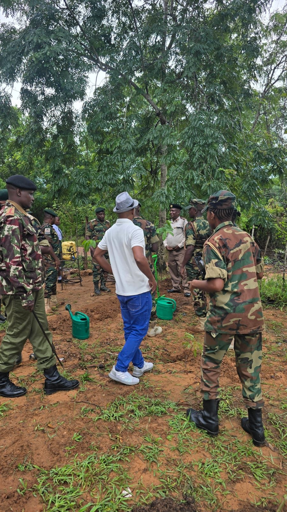

Planting Together: A Community Tree-Planting Event
It was a day of green hands and full hearts. Partners, rangers, community members, women, youth and schoolchildren came together for a community tree-planting event — and celebrated every seedling with song and dance.
True to the spirit of our 366 Tree Challenge, the call was simple: everyone plants. Local leaders and forestry rangers broke the first ground, and the whole community followed — neighbours sharing watering cans, parents kneeling beside their children, and pupils proudly settling young seedlings into the soil.

For us, events like this are about more than the trees that go into the ground. They are about belonging. When elders, officials and the youngest pupils all take part, conservation stops being someone else's job and becomes a shared promise — a gift we tend together.
Every tree planted today is shade, fruit, and clean air for tomorrow. Here are a few moments from the day:






Bring the 366 Tree Challenge to your community
Host an event, volunteer, or simply plant your tree for the day — restore, conserve, and empower with us.
Get Involved